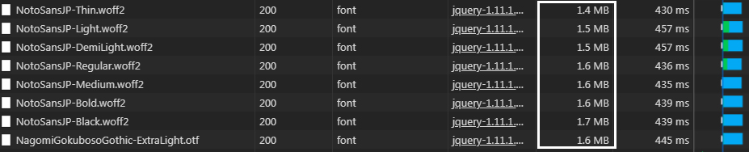

webフォントとは？
元来、Webブラウザは端末にインストールされているフォントを呼び出し文字を表示する。端末のフォント如何では、Webデザイナーが意図しないWeb表示がなされてしまい、またフォントに関するWebデザインに制約が生じてしまう。フォントを画像にして表示するという手はあったが、文章修正のメンテナンス、文章の検索といった点で問題がある。そこでWebサーバー上にフォントファイルを置き、Webデザイナーの意図するフォントを表示できるようにした技術がWebフォントである。
出典：wikipedia
http://ja.wikipedia.org/wiki/Web%E3%83%95%E3%82%A9%E3%83%B3%E3%83%88
つまり、PC上にないフォントでもwebサーバ上にあればどのPCで見ても同じフォントで見れるということらしい。（windowsとMacのフォント違いのせいでfont-familyに悩まなくて済むかもしれない。）
- 基本的な埋め込み方法
-
- 1.サイトからフォントをダウンロードしてくる。
- 2.適当なディレクトリに配置（今回は/practice/web-font/配下に格納）
- 3.CSSにファイルを読み込む
webフォントは大抵下記のファイル形式らしいので、ダウンロードしてきてどのファイル形式かを確認すること。@font-face { font-family: 'フォント名'; src: url('フォント名.eot'); src: url('フォント名.eot?iefix') format('eot'), url('フォント名.woff') format('woff'), url('フォント名.ttf') format('truetype'), url('フォント名.svg#webfontjSpbZQRv') format('svg'); }
★Google Fontsを埋め込んでみる!
Google Fontsはwebサーバ上に置く必要は基本的にない。
公式ページから使用したいフォントを探して、いろいろ選択していくと、Googleが勝手CSSを作ってくれる。
そのCSSをhead内で読み込んで、あとはstyleでfont-familyを指定すればオッケー
Google font
I AM A CAT. As yet I have no name.
I’ve no idea where I was born.
All I remember is …
★日本語のGoogle Fontsを埋め込んでみる
[Noto Sans Japanese]の埋め込み
@importもしくはhead内での読み込みを追記する。
@import url(//fonts.googleapis.com/earlyaccess/notosansjapanese.css);
CSSの中身は以下
/*
* Noto Sans Japanese (japanese) http://www.google.com/fonts/earlyaccess
*/
@font-face {
font-family: 'Noto Sans Japanese';
font-style: normal;
font-weight: 100;
src: url(//fonts.gstatic.com/ea/notosansjapanese/v6/NotoSansJP-Thin.woff2) format('woff2'),
url(//fonts.gstatic.com/ea/notosansjapanese/v6/NotoSansJP-Thin.woff) format('woff'),
url(//fonts.gstatic.com/ea/notosansjapanese/v6/NotoSansJP-Thin.otf) format('opentype');
}
@font-face {
font-family: 'Noto Sans Japanese';
font-style: normal;
font-weight: 200;
src: url(//fonts.gstatic.com/ea/notosansjapanese/v6/NotoSansJP-Light.woff2) format('woff2'),
url(//fonts.gstatic.com/ea/notosansjapanese/v6/NotoSansJP-Light.woff) format('woff'),
url(//fonts.gstatic.com/ea/notosansjapanese/v6/NotoSansJP-Light.otf) format('opentype');
}
@font-face {
font-family: 'Noto Sans Japanese';
font-style: normal;
font-weight: 300;
src: url(//fonts.gstatic.com/ea/notosansjapanese/v6/NotoSansJP-DemiLight.woff2) format('woff2'),
url(//fonts.gstatic.com/ea/notosansjapanese/v6/NotoSansJP-DemiLight.woff) format('woff'),
url(//fonts.gstatic.com/ea/notosansjapanese/v6/NotoSansJP-DemiLight.otf) format('opentype');
}
@font-face {
font-family: 'Noto Sans Japanese';
font-style: normal;
font-weight: 400;
src: url(//fonts.gstatic.com/ea/notosansjapanese/v6/NotoSansJP-Regular.woff2) format('woff2'),
url(//fonts.gstatic.com/ea/notosansjapanese/v6/NotoSansJP-Regular.woff) format('woff'),
url(//fonts.gstatic.com/ea/notosansjapanese/v6/NotoSansJP-Regular.otf) format('opentype');
}
@font-face {
font-family: 'Noto Sans Japanese';
font-style: normal;
font-weight: 500;
src: url(//fonts.gstatic.com/ea/notosansjapanese/v6/NotoSansJP-Medium.woff2) format('woff2'),
url(//fonts.gstatic.com/ea/notosansjapanese/v6/NotoSansJP-Medium.woff) format('woff'),
url(//fonts.gstatic.com/ea/notosansjapanese/v6/NotoSansJP-Medium.otf) format('opentype');
}
@font-face {
font-family: 'Noto Sans Japanese';
font-style: normal;
font-weight: 700;
src: url(//fonts.gstatic.com/ea/notosansjapanese/v6/NotoSansJP-Bold.woff2) format('woff2'),
url(//fonts.gstatic.com/ea/notosansjapanese/v6/NotoSansJP-Bold.woff) format('woff'),
url(//fonts.gstatic.com/ea/notosansjapanese/v6/NotoSansJP-Bold.otf) format('opentype');
}
@font-face {
font-family: 'Noto Sans Japanese';
font-style: normal;
font-weight: 900;
src: url(//fonts.gstatic.com/ea/notosansjapanese/v6/NotoSansJP-Black.woff2) format('woff2'),
url(//fonts.gstatic.com/ea/notosansjapanese/v6/NotoSansJP-Black.woff) format('woff'),
url(//fonts.gstatic.com/ea/notosansjapanese/v6/NotoSansJP-Black.otf) format('opentype');
}
font-weight: 100
吾輩わがはいは猫である。名前はまだ無い。 どこで生れたかとんと見当けんとうがつかぬ。何でも薄暗いじめじめした所でニャーニャー泣いていた事だけは記憶している。吾輩はここで始めて人間というものを見た。しかもあとで聞くとそれは書生という人間中で一番獰悪どうあくな種族であったそうだ。
font-weight: 200
吾輩わがはいは猫である。名前はまだ無い。 どこで生れたかとんと見当けんとうがつかぬ。何でも薄暗いじめじめした所でニャーニャー泣いていた事だけは記憶している。吾輩はここで始めて人間というものを見た。しかもあとで聞くとそれは書生という人間中で一番獰悪どうあくな種族であったそうだ。
font-weight: 300
吾輩わがはいは猫である。名前はまだ無い。 どこで生れたかとんと見当けんとうがつかぬ。何でも薄暗いじめじめした所でニャーニャー泣いていた事だけは記憶している。吾輩はここで始めて人間というものを見た。しかもあとで聞くとそれは書生という人間中で一番獰悪どうあくな種族であったそうだ。
font-weight: 400
吾輩わがはいは猫である。名前はまだ無い。 どこで生れたかとんと見当けんとうがつかぬ。何でも薄暗いじめじめした所でニャーニャー泣いていた事だけは記憶している。吾輩はここで始めて人間というものを見た。しかもあとで聞くとそれは書生という人間中で一番獰悪どうあくな種族であったそうだ。
font-weight: 500
吾輩わがはいは猫である。名前はまだ無い。 どこで生れたかとんと見当けんとうがつかぬ。何でも薄暗いじめじめした所でニャーニャー泣いていた事だけは記憶している。吾輩はここで始めて人間というものを見た。しかもあとで聞くとそれは書生という人間中で一番獰悪どうあくな種族であったそうだ。
font-weight: 700
吾輩わがはいは猫である。名前はまだ無い。 どこで生れたかとんと見当けんとうがつかぬ。何でも薄暗いじめじめした所でニャーニャー泣いていた事だけは記憶している。吾輩はここで始めて人間というものを見た。しかもあとで聞くとそれは書生という人間中で一番獰悪どうあくな種族であったそうだ。
font-weight: 900
吾輩わがはいは猫である。名前はまだ無い。 どこで生れたかとんと見当けんとうがつかぬ。何でも薄暗いじめじめした所でニャーニャー泣いていた事だけは記憶している。吾輩はここで始めて人間というものを見た。しかもあとで聞くとそれは書生という人間中で一番獰悪どうあくな種族であったそうだ。
ちなみに容量は以下。さすがに全部読み込むのは重いので、普通のと太字のだけくらいがいいのかも
★webフォントのアイコンを使ってみる
今回はFont Awesome
Font AwesomeもGoogle Fontsもローカルやサーバーに置いておく必要が無いタイプで、head内に下記の読み込みを追加するだけで、670種類を超えるアイコンを使えるようになる！
- 埋め込み方法
-
- 1.head内に下記の読み込みを追加
<link rel="stylesheet" href="https://use.fontawesome.com/releases/v5.1.0/css/all.css" integrity="sha384-lKuwvrZot6UHsBSfcMvOkWwlCMgc0TaWr+30HWe3a4ltaBwTZhyTEggF5tJv8tbt" crossorigin="anonymous"> - 2.使用したいアイコンを選ぶ
左側のFreeにチェックを入れるとフリーで使用できるものが絞り込まれる。 - 3アイコンを表示する
使用したいアイコンをクリックすると、各アイコンのページに遷移する。
ページ下部に埋め込むコードが表示されているので、これをコピペでhtmlに貼り付ければ完成！
デフォルトではiタグになっているが、別に何でもよい。ただ、Font Awesomeのcssでブロック要素のタグに突っ込んでも、全てdieplay:inline-blockになるので注意埋め込んでみた
晴れ
曇り
雨
雪
- 1.head内に下記の読み込みを追加